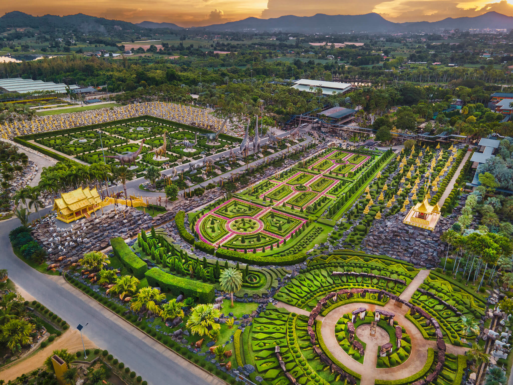

ข้อมูลเกี่ยวกับสวนนงนุส สวนนงนุช ตั้งอยู่ในหมู่ที่ 7 ตำบลนาจอมเทียน อำเภอสัตหีบ จังหวัดชลบุรี ก่อตั้งโดยนงนุช ตันสัจจา เปิดอย่างเป็นทางการในเมื่อ พ.ศ. 2523 พร้อมจัดให้มีการแสดงศิลปวัฒนธรรมไทยร่วมสมัยและการแสดงช้างแสนรู้ภายในโรงละคร กระทั่ง 3 ปีต่อมาคุณนงนุชได้มอบให้ทายาทคนที่ 2 คือคุณกัมพล ตันสัจจา เข้ามาพัฒนา บริหารจัดการจนกลายเป็นสถานที่ท่องเที่ยวที่มีชื่อเสียง